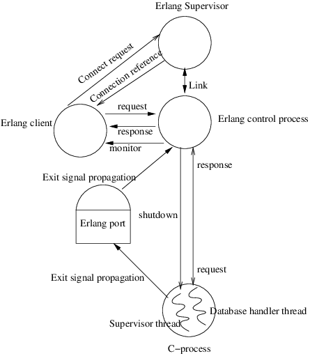

Error handling
View SourceStrategy
On a conceptual level starting a database connection using the Erlang ODBC API
is a basic client server application. The client process uses the API to start
and communicate with the server process that manages the connection. The
strategy of the Erlang ODBC application is that programming faults in the
application itself will cause the connection process to terminate
abnormally.(When a process terminates abnormally its supervisor will log
relevant error reports.) Calls to API functions during or after termination of
the connection process, will return {error, connection_closed}. Contextual
errors on the other hand will not terminate the connection it will only return
{error, Reason}to the client, where Reason may be any erlang term.
Clients
The connection is associated with the process that created it and can only be accessed through it. The reason for this is to preserve the semantics of result sets and transactions when select_count/[2,3] is called or auto_commit is turned off. Attempts to use the connection from another process will fail. This will not effect the connection. On the other hand, if the client process dies the connection will be terminated.
Timeouts
All request made by the client to the connection are synchronous. If the timeout is used and expires the client process will exit with reason timeout. Probably the right thing to do is let the client die and perhaps be restarted by its supervisor. But if the client chooses to catch this timeout, it is a good idea to wait a little while before trying again. If there are too many consecutive timeouts that are caught the connection process will conclude that there is something radically wrong and terminate the connection.
Guards
All API-functions are guarded and if you pass an argument of the wrong type a runtime error will occur. All input parameters to internal functions are trusted to be correct. It is a good programming practise to only distrust input from truly external sources. You are not supposed to catch these errors, it will only make the code very messy and much more complex, which introduces more bugs and in the worst case also covers up the actual faults. Put your effort on testing instead, you should trust your own input.
The whole picture
As the Erlang ODBC application relies on third party products and communicates with a database that probably runs on another computer in the network there are plenty of things that might go wrong. To fully understand the things that might happen it facilitate to know the design of the Erlang ODBC application, hence here follows a short description of the current design.
Note
Please note that design is something, that not necessarily will, but might change in future releases. While the semantics of the API will not change as it is independent of the implementation.

When you do application:start(odbc) the only thing that happens is that a supervisor process is started. For each call to the API function connect/2 a process is spawned and added as a child to the Erlang ODBC supervisor. The supervisors only tasks are to provide error-log reports, if a child process should die abnormally, and the possibility to do a code change. Only the client process has the knowledge to decide if this connection managing process should be restarted.
The erlang connection process spawned by connect/2, will open a port to a c-process that handles the communication with the database through Microsoft's ODBC API. The erlang port will be kept open for exit signal propagation, if something goes wrong in the c-process and it exits we want know as mush as possible about the reason. The main communication with the c-process is done through sockets. The C-process consists of two threads, the supervisor thread and the database handler thread. The supervisor thread checks for shutdown messages on the supervisor socket and the database handler thread receives requests and sends answers on the database socket. If the database thread seems to hang on some database call, the erlang control process will send a shutdown message on the supervisor socket, in this case the c-process will exit. If the c-process crashes/exits it will bring the erlang-process down too and vice versa i.e. the connection is terminated.
Error types
The types of errors that may occur can be divide into the following categories.
- Configuration problems - Everything from that the database was not set up right to that the c-program that should be run through the erlang port was not compiled for your platform.
- Errors discovered by the ODBC driver - If calls to the ODBC-driver fails due
to circumstances that cannot be controlled by the Erlang ODBC application
programmer, an error string will be dug up from the driver. This string will
be the
Reasonin the{error, Reason}return value. How good this error message is will of course be driver dependent. Examples of such circumstances are trying to insert the same key twice, invalid SQL-queries and that the database has gone off line. - Connection termination - If a connection is terminated in an abnormal way, or
if you try to use a connection that you have already terminated in a normal
way by calling disconnect/1, the return value will
be
{error, connection_closed}. A connection could end abnormally because of an programming error in the Erlang ODBC application, but also if the ODBC driver crashes. - Contextual errors - If API functions are used in the wrong context, the
Reasonin the error tuple will be a descriptive atom. For instance if you try to call the functionlast/[1,2]without first callingselect_count/[2,3]to associate a result set with the connection. If the ODBC-driver does not support some functions, or if you disabled some functionality for a connection and then try to use it.